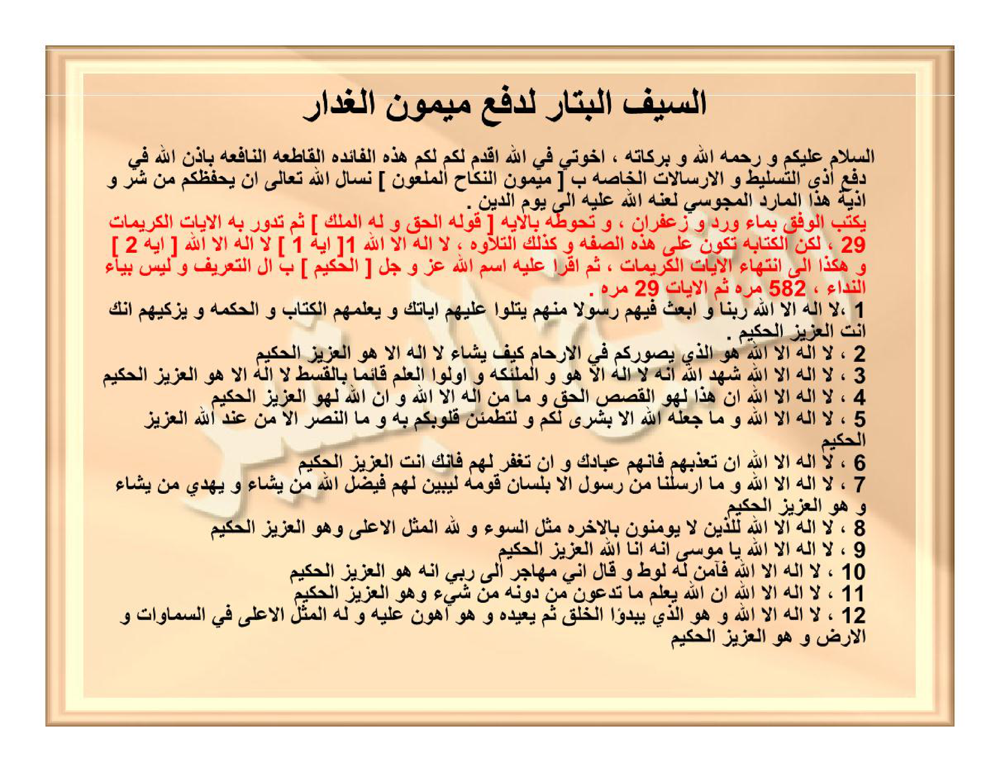

Preview Hal22-24 — tanpa scroll panjang: Arab / Latin / Terjemahan terpisah. Klik header untuk ganti tab.
HALAMAN 22-24 — AS-SAIFUL-BATTĀR LI-DAF'I MAIMŪNIL-GHADDĀR — السَّيْفُ الْبَتَّارُ لِدَفْعِ مَيْمُونٍ الْغَدَّارِ
arab
السَّيْفُ الْبَتَّارُ لِدَفْعِ مَيْمُونٍ الْغَدَّارِ
السَّلَامُ عَلَيْكُمْ وَرَحْمَةُ اللهِ وَبَرَكَاتُهُ، إِخْوَتِي فِي اللهِ أُقَدِّمُ لَكُمْ هَذِهِ الْفَائِدَةَ الْقَاطِعَةَ النَّافِعَةَ بِإِذْنِ اللهِ فِي دَفْعِ أَذَى التَّسْلِيطِ وَالْإِرْسَالَاتِ الْخَاصَّةِ بِـ [مَيْمُونِ النِّكَاحِ الْمَلْعُونِ] نَسْأَلُ اللهَ تَعَالَى أَنْ يَحْفَظَكُمْ مِنْ شَرِّ أَذِيَّةِ هَذَا الْمَارِدِ الْمَجُوسِيِّ لَعَنَهُ اللهُ عَلَيْهِ إِلَى يَوْمِ الدِّينِ
يُكْتَبُ الْوَفْقُ بِمَاءِ وَرْدٍ وَزَعْفَرَانٍ، وَتُحَوِّطُهُ بِالْآيَةِ [قَوْلُهُ الْحَقُّ وَلَهُ الْمُلْكُ] ثُمَّ تَدُورُ بِهِ الْآيَاتُ الْكَرِيمَاتُ ٢٩، لَكِنَّ الْكِتَابَةَ تَكُونُ عَلَى هَذِهِ الصِّفَةِ وَكَذَلِكَ التِّلَاوَةُ، لَا إِلَهَ إِلَّا اللهُ [آيَة ١] لَا إِلَهَ إِلَّا اللهُ [آيَة ٢] وَهَكَذَا إِلَى انْتِهَاءِ الْآيَاتِ الْكَرِيمَاتِ، ثُمَّ اقْرَأْ عَلَيْهِ اسْمَ اللهِ عَزَّ وَجَلَّ [الْحَكِيمُ] بِـ أَلْ التَّعْرِيفِ وَلَيْسَ بِيَاءِ النِّدَاءِ، ٥٨٢ مَرَّةً ثُمَّ الْآيَاتِ ٢٩ مَرَّةً
١، لَا إِلَهَ إِلَّا اللهُ رَبَّنَا وَابْعَثْ فِيهِمْ رَسُولًا مِنْهُمْ يَتْلُو عَلَيْهِمْ آيَاتِكَ وَيُعَلِّمُهُمُ الْكِتَابَ وَالْحِكْمَةَ وَيُزَكِّيهِمْ إِنَّكَ أَنْتَ الْعَزِيزُ الْحَكِيمُ
٢، لَا إِلَهَ إِلَّا اللهُ هُوَ الَّذِي يُصَوِّرُكُمْ فِي الْأَرْحَامِ كَيْفَ يَشَاءُ لَا إِلَهَ إِلَّا هُوَ الْعَزِيزُ الْحَكِيمُ
٣، لَا إِلَهَ إِلَّا اللهُ شَهِدَ اللهُ أَنَّهُ لَا إِلَهَ إِلَّا هُوَ وَالْمَلَائِكَةُ وَأُولُو الْعِلْمِ قَائِمًا بِالْقِسْطِ لَا إِلَهَ إِلَّا هُوَ الْعَزِيزُ الْحَكِيمُ
٤، لَا إِلَهَ إِلَّا اللهُ إِنَّ هَذَا لَهُوَ الْقَصَصُ الْحَقُّ وَمَا مِنْ إِلَهٍ إِلَّا اللهُ وَإِنَّ اللهَ لَهُوَ الْعَزِيزُ الْحَكِيمُ
٥، لَا إِلَهَ إِلَّا اللهُ وَمَا جَعَلَهُ اللهُ إِلَّا بُشْرَى لَكُمْ وَلِتَطْمَئِنَّ قُلُوبُكُمْ بِهِ وَمَا النَّصْرُ إِلَّا مِنْ عِنْدِ اللهِ الْعَزِيزِ الْحَكِيمِ
٦، لَا إِلَهَ إِلَّا اللهُ إِنْ تُعَذِّبْهُمْ فَإِنَّهُمْ عِبَادُكَ وَإِنْ تَغْفِرْ لَهُمْ فَإِنَّكَ أَنْتَ الْعَزِيزُ الْحَكِيمُ
٧، لَا إِلَهَ إِلَّا اللهُ وَمَا أَرْسَلْنَا مِنْ رَسُولٍ إِلَّا بِلِسَانِ قَوْمِهِ لِيُبَيِّنَ لَهُمْ فَيُضِلُّ اللهُ مَنْ يَشَاءُ وَيَهْدِي مَنْ يَشَاءُ وَهُوَ الْعَزِيزُ الْحَكِيمُ
٨، لَا إِلَهَ إِلَّا اللهُ لِلَّذِينَ لَا يُؤْمِنُونَ بِالْآخِرَةِ مَثَلُ السَّوْءِ وَلِلّٰهِ الْمَثَلُ الْأَعْلَى وَهُوَ الْعَزِيزُ الْحَكِيمُ
٩، لَا إِلَهَ إِلَّا اللهُ يَا مُوسَى إِنَّهُ أَنَا اللهُ الْعَزِيزُ الْحَكِيمُ
١٠، لَا إِلَهَ إِلَّا اللهُ فَآمَنَ لَهُ لُوطٌ وَقَالَ إِنِّي مُهَاجِرٌ إِلَى رَبِّي إِنَّهُ هُوَ الْعَزِيزُ الْحَكِيمُ
١١، لَا إِلَهَ إِلَّا اللهُ إِنَّ اللهَ يَعْلَمُ مَا تَدْعُونَ مِنْ دُونِهِ مِنْ شَيْءٍ وَهُوَ الْعَزِيزُ الْحَكِيمُ
١٢، لَا إِلَهَ إِلَّا اللهُ وَهُوَ الَّذِي يَبْدَؤُا الْخَلْقَ ثُمَّ يُعِيدُهُ وَهُوَ أَهْوَنُ عَلَيْهِ وَلَهُ الْمَثَلُ الْأَعْلَى فِي السَّمَاوَاتِ وَالْأَرْضِ وَهُوَ الْعَزِيزُ الْحَكِيمُ
١٣، لَا إِلَهَ إِلَّا اللهُ خَالِدِينَ فِيهَا وَعْدَ اللهِ حَقًّا وَهُوَ الْعَزِيزُ الْحَكِيمُ
١٤، لَا إِلَهَ إِلَّا اللهُ قُلْ أَرُونِيَ الَّذِينَ أَلْحَقْتُمْ بِهِ شُرَكَاءَ كَلَّا بَلْ هُوَ اللهُ الْعَزِيزُ الْحَكِيمُ
١٥، لَا إِلَهَ إِلَّا اللهُ مَا يَفْتَحِ اللهُ لِلنَّاسِ مِنْ رَحْمَةٍ فَلَا مُمْسِكَ لَهَا وَمَا يُمْسِكْ فَلَا مُرْسِلَ لَهُ مِنْ بَعْدِهِ وَهُوَ الْعَزِيزُ الْحَكِيمُ
١٦، لَا إِلَهَ إِلَّا اللهُ تَنْزِيلُ الْكِتَابِ مِنَ اللهِ الْعَزِيزِ الْحَكِيمِ
١٧، لَا إِلَهَ إِلَّا اللهُ رَبَّنَا وَأَدْخِلْهُمْ جَنَّاتِ عَدْنٍ الَّتِي وَعَدْتَهُمْ وَمَنْ صَلَحَ مِنْ آبَائِهِمْ وَأَزْوَاجِهِمْ وَذُرِّيَّاتِهِمْ إِنَّكَ أَنْتَ الْعَزِيزُ الْحَكِيمُ
١٨، لَا إِلَهَ إِلَّا اللهُ حم عسق كَذَلِكَ يُوحِي إِلَيْكَ وَإِلَى الَّذِينَ مِنْ قَبْلِكَ اللهُ الْعَزِيزُ الْحَكِيمُ
١٩، لَا إِلَهَ إِلَّا اللهُ حم تَنْزِيلُ الْكِتَابِ مِنَ اللهِ الْعَزِيزِ الْحَكِيمِ [الْجَاثِيَةُ]
٢٠، لَا إِلَهَ إِلَّا اللهُ وَلَهُ الْكِبْرِيَاءُ فِي السَّمَاوَاتِ وَالْأَرْضِ وَهُوَ الْعَزِيزُ الْحَكِيمُ
٢١، لَا إِلَهَ إِلَّا اللهُ حم تَنْزِيلُ الْكِتَابِ مِنَ اللهِ الْعَزِيزِ الْحَكِيمِ [الْأَحْقَافُ]
٢٢، لَا إِلَهَ إِلَّا اللهُ سَبَّحَ لِلّٰهِ مَا فِي السَّمَاوَاتِ وَالْأَرْضِ وَهُوَ الْعَزِيزُ الْحَكِيمُ [الْحَدِيدُ]
٢٣، لَا إِلَهَ إِلَّا اللهُ سَبَّحَ لِلّٰهِ مَا فِي السَّمَاوَاتِ وَمَا فِي الْأَرْضِ وَهُوَ الْعَزِيزُ الْحَكِيمُ [الْحَشْرُ]
٢٤، لَا إِلَهَ إِلَّا اللهُ هُوَ اللهُ الْخَالِقُ الْبَارِئُ الْمُصَوِّرُ لَهُ الْأَسْمَاءُ الْحُسْنَى يُسَبِّحُ لَهُ مَا فِي السَّمَاوَاتِ وَالْأَرْضِ وَهُوَ الْعَزِيزُ الْحَكِيمُ
٢٥، لَا إِلَهَ إِلَّا اللهُ رَبَّنَا لَا تَجْعَلْنَا فِتْنَةً لِلَّذِينَ كَفَرُوا وَاغْفِرْ لَنَا رَبَّنَا إِنَّكَ أَنْتَ الْعَزِيزُ الْحَكِيمُ
٢٦، لَا إِلَهَ إِلَّا اللهُ سَبَّحَ لِلّٰهِ مَا فِي السَّمَاوَاتِ وَمَا فِي الْأَرْضِ وَهُوَ الْعَزِيزُ الْحَكِيمُ [الصَّفُّ]
٢٧، لَا إِلَهَ إِلَّا اللهُ يُسَبِّحُ لِلّٰهِ مَا فِي السَّمَاوَاتِ وَمَا فِي الْأَرْضِ الْمَلِكُ الْقُدُّوسُ الْعَزِيزُ الْحَكِيمُ
٢٨، لَا إِلَهَ إِلَّا اللهُ وَآخَرِينَ مِنْهُمْ لَمَّا يَلْحَقُوا بِهِمْ وَهُوَ الْعَزِيزُ الْحَكِيمُ
٢٩، لَا إِلَهَ إِلَّا اللهُ عَالِمُ الْغَيْبِ وَالشَّهَادَةِ وَهُوَ الْعَزِيزُ الْحَكِيمُ
تَمَّتْ أُخْوَتِي فِي اللهِ الْآيَاتُ الْكَرِيمَاتُ وَإِلَيْكُمُ الْوَفْقُ السَّالِفُ ذِكْرُهُ
وَ هَذَا هُوَ الْوَفْقُ
| ٢٧٤ | ١٤٣ | ١٦٥ |
| ٨٥ | ١٩٤ | ٣٠٣ |
| ٢٢٣ | ٢٤٥ | ١١٤ |
Visual LTR: 165|143|274 / 303|194|85 / 114|245|223 — Simpan RTL: 274|143|165 / 85|194|303 / 223|245|114 — jumlah 582
latin
As-saiful-battāru li-daf'i Maimūnil-ghaddār.
As-salāmu 'alaikum wa rahmatullāhi wa barakātuh, ikhwatī fillāhi uqaddimu lakum hādzihil-fāidatal-qāthi'atan-nāfi'ata bi-idznillāhi fī daf'i adzat-taslīthi wal-irsālātikh-khāshshati bi-[Maimūnin-nikāhil-mal'ūni] nas'alullāha ta'ālā an yahfazhakum min syarri adziyyati hādzal-māridil-majūsiyyi la'anahullāhu 'alaihi ilā yaumid-dīn.
Yuktabul-wafqu bi-mā'i wardin wa za'farānin, wa tuhawwithuhu bil-āyati [Qauluhul-haqqu wa lahul-mulku] tsumma tadūru bihil-āyātil-karīmāti 29, lākinnal-kitābata takūnu 'alā hādzihish-shifati wa kadzālikat-tilāwatu, Lā ilāha illallāhu [āyah 1] Lā ilāha illallāhu [āyah 2] wa hākadzā ilā intihā'il-āyātil-karīmāti, tsummaqra' 'alaihi ismallāhi 'azza wa jalla [Al-Hakīmu] bi-alit-ta'rīfi wa laisa bi-yā'in-nidā'i, 582 marratan tsumma al-āyāti 29 marratan:
1, Lā ilāha illallāhu Rabbanā wab'ats fīhim rasūlan minhum yatlū 'alaihim āyātika wa yu'allimuhumul-kitāba wal-hikmata wa yuzakkīhim innaka Antal-'Azīzul-Hakīm.
2, Lā ilāha illallāhu Huwal-ladzī yushawwirukum fil-arhāmi kaifa yasyā'u Lā ilāha illā Huwal-'Azīzul-Hakīm.
3, Lā ilāha illallāhu Syahidallāhu annahu Lā ilāha illā Huwa wal-malāikatu wa ulul-'ilmi qā'iman bil-qisthi Lā ilāha illā Huwal-'Azīzul-Hakīm.
4, Lā ilāha illallāhu Inna hādzā lahuwa al-qashashul-haqqu wa mā min ilāhin illallāhu wa innallāha lahuwa al-'Azīzul-Hakīm.
5, Lā ilāha illallāhu wa mā ja'alahullāhu illā busyra lakum wa li-tathma'inna qulūbukum bihi wa man-nashru illā min 'indillāhil-'Azīzil-Hakīm.
6, Lā ilāha illallāhu in tu'adzzibhum fa-innahum 'ibāduka wa in taghfir lahum fa-innaka Antal-'Azīzul-Hakīm.
7, Lā ilāha illallāhu wa mā arsalnā min rasūlin illā bi-lisāni qaumihi li-yubayyina lahum fa-yudhillullāhu man yasyā'u wa yahdī man yasyā'u wa Huwal-'Azīzul-Hakīm.
8, Lā ilāha illallāhu lil-ladzīna lā yu'minūna bil-ākhirati matsalu as-sau'i wa lillāhil-matsalul-a'lā wa Huwal-'Azīzul-Hakīm.
9, Lā ilāha illallāhu yā Mūsā innahu Anal-lāhul-'Azīzul-Hakīm.
10, Lā ilāha illallāhu fa-āmana lahu Lūthun wa qāla innī muhājirun ilā Rabbī innahu Huwal-'Azīzul-Hakīm.
11, Lā ilāha illallāhu innallāha ya'lamu mā tad'ūna min dūnihi min syai'in wa Huwal-'Azīzul-Hakīm.
12, Lā ilāha illallāhu wa Huwal-ladzī yabda'ul-khalqa tsumma yu'īduhu wa Huwa ahwanu 'alaihi wa lahul-matsalul-a'lā fis-samāwāti wal-ardhi wa Huwal-'Azīzul-Hakīm.
13, Lā ilāha illallāhu khālidīna fīhā wa'dallāhi haqqan wa Huwal-'Azīzul-Hakīm.
14, Lā ilāha illallāhu qul arūniyal-ladzīna alhaqtum bihi syurakā'a kallā bal Huwallāhul-'Azīzul-Hakīm.
15, Lā ilāha illallāhu mā yaftahillāhu lin-nāsi min rahmatin fa-lā mumsika lahā wa mā yumsik fa-lā mursila lahu min ba'dihi wa Huwal-'Azīzul-Hakīm.
16, Lā ilāha illallāhu tanzīlul-kitābi minallāhil-'Azīzil-Hakīm.
17, Lā ilāha illallāhu Rabbanā wa adkhilhum jannāti 'adninil-latī wa'adtahum wa man shalaha min ābā'ihim wa azwājihim wa dzurriyyātihim innaka Antal-'Azīzul-Hakīm.
18, Lā ilāha illallāhu Hā Mīm 'Ain Sīn Qāf kadzālika yūhī ilaika wa ilal-ladzīna min qablikallāhul-'Azīzul-Hakīm.
19, Lā ilāha illallāhu Hā Mīm tanzīlul-kitābi minallāhil-'Azīzil-Hakīm [al-Jātsiyah].
20, Lā ilāha illallāhu wa lahul-kibriyā'u fis-samāwāti wal-ardhi wa Huwal-'Azīzul-Hakīm.
21, Lā ilāha illallāhu Hā Mīm tanzīlul-kitābi minallāhil-'Azīzil-Hakīm [al-Ahqāf].
22, Lā ilāha illallāhu sabbaha lillāhi mā fis-samāwāti wal-ardhi wa Huwal-'Azīzul-Hakīm [al-Hadīd].
23, Lā ilāha illallāhu sabbaha lillāhi mā fis-samāwāti wa mā fil-ardhi wa Huwal-'Azīzul-Hakīm [al-Hasyr].
24, Lā ilāha illallāhu Huwallāhul-Khāliqul-Bāri'ul-Mushawwiru lahul-asmā'ul-husnā yusabbihu lahu mā fis-samāwāti wal-ardhi wa Huwal-'Azīzul-Hakīm.
25, Lā ilāha illallāhu Rabbanā lā taj'alnā fitnatan lil-ladzīna kafarū waghfir lanā Rabbanā innaka Antal-'Azīzul-Hakīm.
26, Lā ilāha illallāhu sabbaha lillāhi mā fis-samāwāti wa mā fil-ardhi wa Huwal-'Azīzul-Hakīm [ash-Shaff].
27, Lā ilāha illallāhu yusabbihu lillāhi mā fis-samāwāti wa mā fil-ardhi al-Malikul-Quddūsul-'Azīzul-Hakīm.
28, Lā ilāha illallāhu wa ākharīna minhum lammā yalhaqū bihim wa Huwal-'Azīzul-Hakīm.
29, Lā ilāha illallāhu 'ālimul-ghaibi wasy-syahādati wa Huwal-'Azīzul-Hakīm.
Tammat ikhwatī fillāhi al-āyātul-karīmātu wa ilaikum al-wafqus-sālifu dzikruhu.
Wafaq musallas 3×3 (asror, tanpa latin/terjemah angka — simpan RTL agar dir=rtl): lihat tabel arab di atas.
As-salāmu 'alaikum wa rahmatullāhi wa barakātuh, ikhwatī fillāhi uqaddimu lakum hādzihil-fāidatal-qāthi'atan-nāfi'ata bi-idznillāhi fī daf'i adzat-taslīthi wal-irsālātikh-khāshshati bi-[Maimūnin-nikāhil-mal'ūni] nas'alullāha ta'ālā an yahfazhakum min syarri adziyyati hādzal-māridil-majūsiyyi la'anahullāhu 'alaihi ilā yaumid-dīn.
Yuktabul-wafqu bi-mā'i wardin wa za'farānin, wa tuhawwithuhu bil-āyati [Qauluhul-haqqu wa lahul-mulku] tsumma tadūru bihil-āyātil-karīmāti 29, lākinnal-kitābata takūnu 'alā hādzihish-shifati wa kadzālikat-tilāwatu, Lā ilāha illallāhu [āyah 1] Lā ilāha illallāhu [āyah 2] wa hākadzā ilā intihā'il-āyātil-karīmāti, tsummaqra' 'alaihi ismallāhi 'azza wa jalla [Al-Hakīmu] bi-alit-ta'rīfi wa laisa bi-yā'in-nidā'i, 582 marratan tsumma al-āyāti 29 marratan:
1, Lā ilāha illallāhu Rabbanā wab'ats fīhim rasūlan minhum yatlū 'alaihim āyātika wa yu'allimuhumul-kitāba wal-hikmata wa yuzakkīhim innaka Antal-'Azīzul-Hakīm.
2, Lā ilāha illallāhu Huwal-ladzī yushawwirukum fil-arhāmi kaifa yasyā'u Lā ilāha illā Huwal-'Azīzul-Hakīm.
3, Lā ilāha illallāhu Syahidallāhu annahu Lā ilāha illā Huwa wal-malāikatu wa ulul-'ilmi qā'iman bil-qisthi Lā ilāha illā Huwal-'Azīzul-Hakīm.
4, Lā ilāha illallāhu Inna hādzā lahuwa al-qashashul-haqqu wa mā min ilāhin illallāhu wa innallāha lahuwa al-'Azīzul-Hakīm.
5, Lā ilāha illallāhu wa mā ja'alahullāhu illā busyra lakum wa li-tathma'inna qulūbukum bihi wa man-nashru illā min 'indillāhil-'Azīzil-Hakīm.
6, Lā ilāha illallāhu in tu'adzzibhum fa-innahum 'ibāduka wa in taghfir lahum fa-innaka Antal-'Azīzul-Hakīm.
7, Lā ilāha illallāhu wa mā arsalnā min rasūlin illā bi-lisāni qaumihi li-yubayyina lahum fa-yudhillullāhu man yasyā'u wa yahdī man yasyā'u wa Huwal-'Azīzul-Hakīm.
8, Lā ilāha illallāhu lil-ladzīna lā yu'minūna bil-ākhirati matsalu as-sau'i wa lillāhil-matsalul-a'lā wa Huwal-'Azīzul-Hakīm.
9, Lā ilāha illallāhu yā Mūsā innahu Anal-lāhul-'Azīzul-Hakīm.
10, Lā ilāha illallāhu fa-āmana lahu Lūthun wa qāla innī muhājirun ilā Rabbī innahu Huwal-'Azīzul-Hakīm.
11, Lā ilāha illallāhu innallāha ya'lamu mā tad'ūna min dūnihi min syai'in wa Huwal-'Azīzul-Hakīm.
12, Lā ilāha illallāhu wa Huwal-ladzī yabda'ul-khalqa tsumma yu'īduhu wa Huwa ahwanu 'alaihi wa lahul-matsalul-a'lā fis-samāwāti wal-ardhi wa Huwal-'Azīzul-Hakīm.
13, Lā ilāha illallāhu khālidīna fīhā wa'dallāhi haqqan wa Huwal-'Azīzul-Hakīm.
14, Lā ilāha illallāhu qul arūniyal-ladzīna alhaqtum bihi syurakā'a kallā bal Huwallāhul-'Azīzul-Hakīm.
15, Lā ilāha illallāhu mā yaftahillāhu lin-nāsi min rahmatin fa-lā mumsika lahā wa mā yumsik fa-lā mursila lahu min ba'dihi wa Huwal-'Azīzul-Hakīm.
16, Lā ilāha illallāhu tanzīlul-kitābi minallāhil-'Azīzil-Hakīm.
17, Lā ilāha illallāhu Rabbanā wa adkhilhum jannāti 'adninil-latī wa'adtahum wa man shalaha min ābā'ihim wa azwājihim wa dzurriyyātihim innaka Antal-'Azīzul-Hakīm.
18, Lā ilāha illallāhu Hā Mīm 'Ain Sīn Qāf kadzālika yūhī ilaika wa ilal-ladzīna min qablikallāhul-'Azīzul-Hakīm.
19, Lā ilāha illallāhu Hā Mīm tanzīlul-kitābi minallāhil-'Azīzil-Hakīm [al-Jātsiyah].
20, Lā ilāha illallāhu wa lahul-kibriyā'u fis-samāwāti wal-ardhi wa Huwal-'Azīzul-Hakīm.
21, Lā ilāha illallāhu Hā Mīm tanzīlul-kitābi minallāhil-'Azīzil-Hakīm [al-Ahqāf].
22, Lā ilāha illallāhu sabbaha lillāhi mā fis-samāwāti wal-ardhi wa Huwal-'Azīzul-Hakīm [al-Hadīd].
23, Lā ilāha illallāhu sabbaha lillāhi mā fis-samāwāti wa mā fil-ardhi wa Huwal-'Azīzul-Hakīm [al-Hasyr].
24, Lā ilāha illallāhu Huwallāhul-Khāliqul-Bāri'ul-Mushawwiru lahul-asmā'ul-husnā yusabbihu lahu mā fis-samāwāti wal-ardhi wa Huwal-'Azīzul-Hakīm.
25, Lā ilāha illallāhu Rabbanā lā taj'alnā fitnatan lil-ladzīna kafarū waghfir lanā Rabbanā innaka Antal-'Azīzul-Hakīm.
26, Lā ilāha illallāhu sabbaha lillāhi mā fis-samāwāti wa mā fil-ardhi wa Huwal-'Azīzul-Hakīm [ash-Shaff].
27, Lā ilāha illallāhu yusabbihu lillāhi mā fis-samāwāti wa mā fil-ardhi al-Malikul-Quddūsul-'Azīzul-Hakīm.
28, Lā ilāha illallāhu wa ākharīna minhum lammā yalhaqū bihim wa Huwal-'Azīzul-Hakīm.
29, Lā ilāha illallāhu 'ālimul-ghaibi wasy-syahādati wa Huwal-'Azīzul-Hakīm.
Tammat ikhwatī fillāhi al-āyātul-karīmātu wa ilaikum al-wafqus-sālifu dzikruhu.
Wafaq musallas 3×3 (asror, tanpa latin/terjemah angka — simpan RTL agar dir=rtl): lihat tabel arab di atas.
Terjemahan
Pedang yang tajam untuk menolak Maimun yang berkhianat.
Assalamu'alaikum warahmatullahi wabarakatuh, wahai saudara-saudaraku karena Allah, aku persembahkan kepada kalian faedah yang sangat ampuh dan bermanfaat ini — dengan izin Allah — dalam menolak gangguan penindasan dan kiriman-kiriman khusus yang berkaitan dengan [Maimun Nikah yang terlaknat]. Kami memohon kepada Allah Ta'ala semoga Dia menjaga kalian dari kejahatan gangguan makhluk durhaka yang berwatak Majusi ini — semoga Allah melaknatnya hingga hari Kiamat.
Wafaq ditulis dengan air mawar dan za'faran; kelilingilah ia dengan ayat [Firman-Nya adalah benar dan bagi-Nya kerajaan] kemudian putarilah ia dengan 29 ayat yang mulia. Namun penulisan hendaklah mengikuti tata cara ini dan demikian pula cara membacanya: Lā ilāha illallāh [ayat 1] Lā ilāha illallāh [ayat 2] demikian seterusnya hingga selesai semua ayat yang mulia, kemudian bacakanlah di atasnya nama Allah 'azza wa jalla [Al-Hakim] dengan memakai alif-lam ma'rifah dan bukan dengan ya' panggilan — sebanyak 582 kali kemudian ayat-ayat tersebut 29 kali:
1, Tidak ada tuhan selain Allah — Wahai Tuhan kami, bangkitkanlah di tengah mereka seorang rasul dari kalangan mereka yang membacakan kepada mereka ayat-ayat-Mu, mengajarkan kepada mereka Kitab dan Hikmah, serta menyucikan mereka; sesungguhnya Engkaulah Yang Maha Perkasa lagi Maha Bijaksana.
2, Tidak ada tuhan selain Allah — Dialah yang membentuk kamu dalam rahim sebagaimana Dia kehendaki; tidak ada tuhan selain Dia Yang Maha Perkasa lagi Maha Bijaksana.
3, Tidak ada tuhan selain Allah — Allah bersaksi bahwa tidak ada tuhan selain Dia, demikian pula para malaikat dan orang-orang yang berilmu yang menegakkan keadilan; tidak ada tuhan selain Dia Yang Maha Perkasa lagi Maha Bijaksana.
4, Tidak ada tuhan selain Allah — Sesungguhnya ini benar-benar kisah yang benar; tidak ada tuhan selain Allah; dan sesungguhnya Allah Dialah Yang Maha Perkasa lagi Maha Bijaksana.
5, Tidak ada tuhan selain Allah — Dan tidaklah Allah menjadikannya melainkan sebagai kabar gembira bagi kalian dan agar hati kalian menjadi tenteram dengannya; dan tidak ada pertolongan melainkan dari sisi Allah Yang Maha Perkasa lagi Maha Bijaksana.
6, Tidak ada tuhan selain Allah — Jika Engkau menyiksa mereka, maka sesungguhnya mereka adalah hamba-hamba-Mu; dan jika Engkau mengampuni mereka, maka sesungguhnya Engkaulah Yang Maha Perkasa lagi Maha Bijaksana.
7, Tidak ada tuhan selain Allah — Dan tidaklah Kami mengutus seorang rasul melainkan dengan bahasa kaumnya agar ia menjelaskan kepada mereka; maka Allah menyesatkan siapa yang Dia kehendaki dan memberi petunjuk kepada siapa yang Dia kehendaki; dan Dialah Yang Maha Perkasa lagi Maha Bijaksana.
8, Tidak ada tuhan selain Allah — Bagi orang-orang yang tidak beriman kepada akhirat terdapat perumpamaan yang buruk, dan bagi Allah perumpamaan yang tertinggi; dan Dialah Yang Maha Perkasa lagi Maha Bijaksana.
9, Tidak ada tuhan selain Allah — Wahai Musa, sesungguhnya Aku adalah Allah Yang Maha Perkasa lagi Maha Bijaksana.
10, Tidak ada tuhan selain Allah — Maka berimanlah Luth kepadanya dan berkata: Sesungguhnya aku akan berhijrah kepada Tuhanku; sesungguhnya Dialah Yang Maha Perkasa lagi Maha Bijaksana.
11, Tidak ada tuhan selain Allah — Sesungguhnya Allah mengetahui apa yang kalian seru selain Dia berupa sesuatu apa pun; dan Dialah Yang Maha Perkasa lagi Maha Bijaksana.
12, Tidak ada tuhan selain Allah — Dan Dialah yang memulai penciptaan kemudian mengulanginya, dan itu lebih mudah bagi-Nya; dan bagi-Nya perumpamaan yang tertinggi di langit dan di bumi; dan Dialah Yang Maha Perkasa lagi Maha Bijaksana.
13, Tidak ada tuhan selain Allah — Mereka kekal di dalamnya; janji Allah adalah benar; dan Dialah Yang Maha Perkasa lagi Maha Bijaksana.
14, Tidak ada tuhan selain Allah — Katakanlah: Perlihatkan kepadaku orang-orang yang kalian sekutukan dengan-Nya; sekali-kali tidak, bahkan Dialah Allah Yang Maha Perkasa lagi Maha Bijaksana.
15, Tidak ada tuhan selain Allah — Apa saja yang Allah bukakan bagi manusia berupa rahmat, maka tidak ada yang dapat menahannya; dan apa saja yang Dia tahan, maka tidak ada yang dapat mengirimnya setelah-Nya; dan Dialah Yang Maha Perkasa lagi Maha Bijaksana.
16, Tidak ada tuhan selain Allah — Turunnya Kitab ini dari Allah Yang Maha Perkasa lagi Maha Bijaksana.
17, Tidak ada tuhan selain Allah — Wahai Tuhan kami, masukkanlah mereka ke dalam surga-surga 'Adn yang telah Engkau janjikan kepada mereka beserta orang-orang saleh dari bapak-bapak mereka, istri-istri mereka dan keturunan mereka; sesungguhnya Engkaulah Yang Maha Perkasa lagi Maha Bijaksana.
18, Tidak ada tuhan selain Allah — Hā Mīm ‘Ain Sīn Qāf, demikianlah Allah Yang Maha Perkasa lagi Maha Bijaksana mewahyukan kepadamu dan kepada orang-orang sebelum kamu.
19, Tidak ada tuhan selain Allah — Hā Mīm, turunnya Kitab ini dari Allah Yang Maha Perkasa lagi Maha Bijaksana [Al-Jatsiyah].
20, Tidak ada tuhan selain Allah — Dan bagi-Nya keagungan di langit dan di bumi; dan Dialah Yang Maha Perkasa lagi Maha Bijaksana.
21, Tidak ada tuhan selain Allah — Hā Mīm, turunnya Kitab ini dari Allah Yang Maha Perkasa lagi Maha Bijaksana [Al-Ahqaf].
22, Tidak ada tuhan selain Allah — Bertasbih kepada Allah apa yang ada di langit dan di bumi; dan Dialah Yang Maha Perkasa lagi Maha Bijaksana [Al-Hadid].
23, Tidak ada tuhan selain Allah — Bertasbih kepada Allah apa yang ada di langit dan apa yang ada di bumi; dan Dialah Yang Maha Perkasa lagi Maha Bijaksana [Al-Hasyr].
24, Tidak ada tuhan selain Allah — Dialah Allah Yang Menciptakan, Yang Mengadakan, Yang Membentuk Rupa; bagi-Nya nama-nama yang paling baik; bertasbih kepada-Nya apa yang ada di langit dan di bumi; dan Dialah Yang Maha Perkasa lagi Maha Bijaksana.
25, Tidak ada tuhan selain Allah — Wahai Tuhan kami, janganlah Engkau jadikan kami sebagai fitnah bagi orang-orang kafir; ampunilah kami wahai Tuhan kami; sesungguhnya Engkaulah Yang Maha Perkasa lagi Maha Bijaksana.
26, Tidak ada tuhan selain Allah — Bertasbih kepada Allah apa yang ada di langit dan apa yang ada di bumi; dan Dialah Yang Maha Perkasa lagi Maha Bijaksana [Ash-Shaff].
27, Tidak ada tuhan selain Allah — Bertasbih kepada Allah apa yang ada di langit dan apa yang ada di bumi; Raja Yang Maha Suci Yang Maha Perkasa lagi Maha Bijaksana.
28, Tidak ada tuhan selain Allah — Dan orang-orang lain dari mereka yang belum bertemu dengan mereka; dan Dialah Yang Maha Perkasa lagi Maha Bijaksana.
29, Tidak ada tuhan selain Allah — Yang mengetahui yang gaib dan yang nyata; dan Dialah Yang Maha Perkasa lagi Maha Bijaksana.
Telah selesai, wahai saudara-saudaraku karena Allah, ayat-ayat yang mulia tersebut dan untuk kalian wafaq yang telah disebutkan terdahulu.
Dan inilah wafaqnya.
Assalamu'alaikum warahmatullahi wabarakatuh, wahai saudara-saudaraku karena Allah, aku persembahkan kepada kalian faedah yang sangat ampuh dan bermanfaat ini — dengan izin Allah — dalam menolak gangguan penindasan dan kiriman-kiriman khusus yang berkaitan dengan [Maimun Nikah yang terlaknat]. Kami memohon kepada Allah Ta'ala semoga Dia menjaga kalian dari kejahatan gangguan makhluk durhaka yang berwatak Majusi ini — semoga Allah melaknatnya hingga hari Kiamat.
Wafaq ditulis dengan air mawar dan za'faran; kelilingilah ia dengan ayat [Firman-Nya adalah benar dan bagi-Nya kerajaan] kemudian putarilah ia dengan 29 ayat yang mulia. Namun penulisan hendaklah mengikuti tata cara ini dan demikian pula cara membacanya: Lā ilāha illallāh [ayat 1] Lā ilāha illallāh [ayat 2] demikian seterusnya hingga selesai semua ayat yang mulia, kemudian bacakanlah di atasnya nama Allah 'azza wa jalla [Al-Hakim] dengan memakai alif-lam ma'rifah dan bukan dengan ya' panggilan — sebanyak 582 kali kemudian ayat-ayat tersebut 29 kali:
1, Tidak ada tuhan selain Allah — Wahai Tuhan kami, bangkitkanlah di tengah mereka seorang rasul dari kalangan mereka yang membacakan kepada mereka ayat-ayat-Mu, mengajarkan kepada mereka Kitab dan Hikmah, serta menyucikan mereka; sesungguhnya Engkaulah Yang Maha Perkasa lagi Maha Bijaksana.
2, Tidak ada tuhan selain Allah — Dialah yang membentuk kamu dalam rahim sebagaimana Dia kehendaki; tidak ada tuhan selain Dia Yang Maha Perkasa lagi Maha Bijaksana.
3, Tidak ada tuhan selain Allah — Allah bersaksi bahwa tidak ada tuhan selain Dia, demikian pula para malaikat dan orang-orang yang berilmu yang menegakkan keadilan; tidak ada tuhan selain Dia Yang Maha Perkasa lagi Maha Bijaksana.
4, Tidak ada tuhan selain Allah — Sesungguhnya ini benar-benar kisah yang benar; tidak ada tuhan selain Allah; dan sesungguhnya Allah Dialah Yang Maha Perkasa lagi Maha Bijaksana.
5, Tidak ada tuhan selain Allah — Dan tidaklah Allah menjadikannya melainkan sebagai kabar gembira bagi kalian dan agar hati kalian menjadi tenteram dengannya; dan tidak ada pertolongan melainkan dari sisi Allah Yang Maha Perkasa lagi Maha Bijaksana.
6, Tidak ada tuhan selain Allah — Jika Engkau menyiksa mereka, maka sesungguhnya mereka adalah hamba-hamba-Mu; dan jika Engkau mengampuni mereka, maka sesungguhnya Engkaulah Yang Maha Perkasa lagi Maha Bijaksana.
7, Tidak ada tuhan selain Allah — Dan tidaklah Kami mengutus seorang rasul melainkan dengan bahasa kaumnya agar ia menjelaskan kepada mereka; maka Allah menyesatkan siapa yang Dia kehendaki dan memberi petunjuk kepada siapa yang Dia kehendaki; dan Dialah Yang Maha Perkasa lagi Maha Bijaksana.
8, Tidak ada tuhan selain Allah — Bagi orang-orang yang tidak beriman kepada akhirat terdapat perumpamaan yang buruk, dan bagi Allah perumpamaan yang tertinggi; dan Dialah Yang Maha Perkasa lagi Maha Bijaksana.
9, Tidak ada tuhan selain Allah — Wahai Musa, sesungguhnya Aku adalah Allah Yang Maha Perkasa lagi Maha Bijaksana.
10, Tidak ada tuhan selain Allah — Maka berimanlah Luth kepadanya dan berkata: Sesungguhnya aku akan berhijrah kepada Tuhanku; sesungguhnya Dialah Yang Maha Perkasa lagi Maha Bijaksana.
11, Tidak ada tuhan selain Allah — Sesungguhnya Allah mengetahui apa yang kalian seru selain Dia berupa sesuatu apa pun; dan Dialah Yang Maha Perkasa lagi Maha Bijaksana.
12, Tidak ada tuhan selain Allah — Dan Dialah yang memulai penciptaan kemudian mengulanginya, dan itu lebih mudah bagi-Nya; dan bagi-Nya perumpamaan yang tertinggi di langit dan di bumi; dan Dialah Yang Maha Perkasa lagi Maha Bijaksana.
13, Tidak ada tuhan selain Allah — Mereka kekal di dalamnya; janji Allah adalah benar; dan Dialah Yang Maha Perkasa lagi Maha Bijaksana.
14, Tidak ada tuhan selain Allah — Katakanlah: Perlihatkan kepadaku orang-orang yang kalian sekutukan dengan-Nya; sekali-kali tidak, bahkan Dialah Allah Yang Maha Perkasa lagi Maha Bijaksana.
15, Tidak ada tuhan selain Allah — Apa saja yang Allah bukakan bagi manusia berupa rahmat, maka tidak ada yang dapat menahannya; dan apa saja yang Dia tahan, maka tidak ada yang dapat mengirimnya setelah-Nya; dan Dialah Yang Maha Perkasa lagi Maha Bijaksana.
16, Tidak ada tuhan selain Allah — Turunnya Kitab ini dari Allah Yang Maha Perkasa lagi Maha Bijaksana.
17, Tidak ada tuhan selain Allah — Wahai Tuhan kami, masukkanlah mereka ke dalam surga-surga 'Adn yang telah Engkau janjikan kepada mereka beserta orang-orang saleh dari bapak-bapak mereka, istri-istri mereka dan keturunan mereka; sesungguhnya Engkaulah Yang Maha Perkasa lagi Maha Bijaksana.
18, Tidak ada tuhan selain Allah — Hā Mīm ‘Ain Sīn Qāf, demikianlah Allah Yang Maha Perkasa lagi Maha Bijaksana mewahyukan kepadamu dan kepada orang-orang sebelum kamu.
19, Tidak ada tuhan selain Allah — Hā Mīm, turunnya Kitab ini dari Allah Yang Maha Perkasa lagi Maha Bijaksana [Al-Jatsiyah].
20, Tidak ada tuhan selain Allah — Dan bagi-Nya keagungan di langit dan di bumi; dan Dialah Yang Maha Perkasa lagi Maha Bijaksana.
21, Tidak ada tuhan selain Allah — Hā Mīm, turunnya Kitab ini dari Allah Yang Maha Perkasa lagi Maha Bijaksana [Al-Ahqaf].
22, Tidak ada tuhan selain Allah — Bertasbih kepada Allah apa yang ada di langit dan di bumi; dan Dialah Yang Maha Perkasa lagi Maha Bijaksana [Al-Hadid].
23, Tidak ada tuhan selain Allah — Bertasbih kepada Allah apa yang ada di langit dan apa yang ada di bumi; dan Dialah Yang Maha Perkasa lagi Maha Bijaksana [Al-Hasyr].
24, Tidak ada tuhan selain Allah — Dialah Allah Yang Menciptakan, Yang Mengadakan, Yang Membentuk Rupa; bagi-Nya nama-nama yang paling baik; bertasbih kepada-Nya apa yang ada di langit dan di bumi; dan Dialah Yang Maha Perkasa lagi Maha Bijaksana.
25, Tidak ada tuhan selain Allah — Wahai Tuhan kami, janganlah Engkau jadikan kami sebagai fitnah bagi orang-orang kafir; ampunilah kami wahai Tuhan kami; sesungguhnya Engkaulah Yang Maha Perkasa lagi Maha Bijaksana.
26, Tidak ada tuhan selain Allah — Bertasbih kepada Allah apa yang ada di langit dan apa yang ada di bumi; dan Dialah Yang Maha Perkasa lagi Maha Bijaksana [Ash-Shaff].
27, Tidak ada tuhan selain Allah — Bertasbih kepada Allah apa yang ada di langit dan apa yang ada di bumi; Raja Yang Maha Suci Yang Maha Perkasa lagi Maha Bijaksana.
28, Tidak ada tuhan selain Allah — Dan orang-orang lain dari mereka yang belum bertemu dengan mereka; dan Dialah Yang Maha Perkasa lagi Maha Bijaksana.
29, Tidak ada tuhan selain Allah — Yang mengetahui yang gaib dan yang nyata; dan Dialah Yang Maha Perkasa lagi Maha Bijaksana.
Telah selesai, wahai saudara-saudaraku karena Allah, ayat-ayat yang mulia tersebut dan untuk kalian wafaq yang telah disebutkan terdahulu.
Dan inilah wafaqnya.

[Gambar: HALAMAN 22-24 — AS-SAIFUL-BATTĀR LI-DAF'I MAIMŪNIL-GHADDĀR — السَّيْفُ الْبَتَّارُ لِدَفْعِ مَيْمُونٍ الْغَدَّارِ]

Indeks Preview Hal01-24 — 1 klik tanpa scroll
Klik kartu untuk buka preview — Hal terbaru Hal22-24 ada di paling bawah (badge BARU).
FINAL 5 LAPIS — Hal10/11 diperbaiki
PREVIEW_5_LAPIS_BERSIH.html
PREVIEW_5_LAPIS_BERSIH.html
arsip
Batch02 V2 Hal09-13 — Preview DOCX FINAL
PREVIEW_BATCH02_V2_HAL09-13.html
PREVIEW_BATCH02_V2_HAL09-13.html
arsip
Batch02 V2 LENGKAP Hal09-13 — 9 Ketentuan
PREVIEW_BATCH02_V2_LENGKAP.html
PREVIEW_BATCH02_V2_LENGKAP.html
arsip
HAL 01–08 Gabungan Latin Baru
PREVIEW_HAL01-08_GABUNGAN.html
PREVIEW_HAL01-08_GABUNGAN.html
arsip
HAL 01 SAMPUL
PREVIEW_HAL01_SAMPUL.html
PREVIEW_HAL01_SAMPUL.html
arsip
HAL 02 IHDA — arab latin Terjemahan
PREVIEW_HAL02_IHDA.html
PREVIEW_HAL02_IHDA.html
arsip
HAL 03 IJAZAH
PREVIEW_HAL03_IJAZAH.html
PREVIEW_HAL03_IJAZAH.html
arsip
HAL 04 FIHRIS
PREVIEW_HAL04_FIHRIS.html
PREVIEW_HAL04_FIHRIS.html
arsip
HALAMAN 04 — SAMPUL DALAM
PREVIEW_HAL04_SAMPUL_DALAM.html
PREVIEW_HAL04_SAMPUL_DALAM.html
arsip
HALAMAN 05 — FIHRIS
PREVIEW_HAL05_FIHRIS.html
PREVIEW_HAL05_FIHRIS.html
arsip
HAL 06 MAYSARAH — rajah ditulis ulang
PREVIEW_HAL06_MAYSARAH_1_3.html
PREVIEW_HAL06_MAYSARAH_1_3.html
arsip
HAL 07 MAYSARAH 2/3
PREVIEW_HAL07_MAYSARAH_2_3.html
PREVIEW_HAL07_MAYSARAH_2_3.html
arsip
HAL 08 WAFAQ SISIP Latin Baru
PREVIEW_HAL08_MAYSARAH_3_3.html
PREVIEW_HAL08_MAYSARAH_3_3.html
arsip
HAL 09 MUHRQAH
PREVIEW_HAL09_FAIDAH_MUHRQAH.html
PREVIEW_HAL09_FAIDAH_MUHRQAH.html
arsip
HAL 10 — Rajah Huruf Asli
PREVIEW_HAL10_FAIDAH_MUHRQAH_2.html
PREVIEW_HAL10_FAIDAH_MUHRQAH_2.html
arsip
HAL 11 — Bracket rapi
PREVIEW_HAL11_FAIDAH_QATHIAH_1.html
PREVIEW_HAL11_FAIDAH_QATHIAH_1.html
arsip
HAL 12 KOREKSI 3x3 — Arab RTL benar
PREVIEW_HAL12_FAIDAH_QATHIAH_WAFQ.html
PREVIEW_HAL12_FAIDAH_QATHIAH_WAFQ.html
arsip
HAL 13 — sinkron hal_13.png
PREVIEW_HAL13_ZAJR_QATHI_1_3.html
PREVIEW_HAL13_ZAJR_QATHI_1_3.html
arsip
HAL 14 — tanda kurung diperbaiki
PREVIEW_HAL14_ZAJR_QATHI_2_3.html
PREVIEW_HAL14_ZAJR_QATHI_2_3.html
arsip
HALAMAN 15 — FAIDAH THARD 'ATHLUSH 1/2 — فَائِدَةٌ لِطَرْدِ عَطْلُوشٍ
PREVIEW_HAL15_ATHLUSH_1_3.html
PREVIEW_HAL15_ATHLUSH_1_3.html
arsip
HALAMAN 16 — FAIDAH THARD 'ATHLUSH 2/2 — WAFAQ 3×3
PREVIEW_HAL16_ATHLUSH_2_3.html
PREVIEW_HAL16_ATHLUSH_2_3.html
arsip
HALAMAN 17 — AD-DURRAH AN-NŪRĀNIYYAH 1/2 — الدُّرَّةُ النُّورَانِيَّةُ
PREVIEW_HAL17_DURRAH_1_2.html
PREVIEW_HAL17_DURRAH_1_2.html
arsip
HALAMAN 18 — WAFAQ MURABBA‘ JALĀLAH 4×4 — وَفْقُ الْجَلَالَةِ
PREVIEW_HAL18_WAFAQ_4X4_2_2.html
PREVIEW_HAL18_WAFAQ_4X4_2_2.html
arsip
HALAMAN 19 — FĀIDAH FĪ TADMĪRIZH ZHĀLIM — فَائِدَةٌ فِي تَدْمِيرِ الظَّالِمِ
PREVIEW_HAL19_TADMIR_1_2.html
PREVIEW_HAL19_TADMIR_1_2.html
BARU
HALAMAN 20 — AL-WAFQU AL-MUTSALLATS 3×3 — الْوَفْقُ الْمُثَلَّثُ
PREVIEW_HAL20_WAFAQ_3X3.html
PREVIEW_HAL20_WAFAQ_3X3.html
BARU
HALAMAN 21 — FĀIDAH MUJARRABAH LI-QAHRIL-QARĪN — فَائِدَةٌ مُجَرَّبَةٌ لِقَهْرِ الْقَرِينِ
PREVIEW_HAL21_QAHR_QARIN_1_1.html
PREVIEW_HAL21_QAHR_QARIN_1_1.html
BARU
HALAMAN 22-24 — AS-SAIFUL-BATTĀR LI-DAF'I MAIMŪNIL-GHADDĀR — السَّيْفُ الْبَتَّارُ لِدَفْعِ مَيْمُونٍ الْغَدَّارِ
PREVIEW_HAL22_SAIF_BATTAR_1_3.html
PREVIEW_HAL22_SAIF_BATTAR_1_3.html
BARU
ANWAR MUJAROBAT — INDEKS PREVIEW Hal01-20
PREVIEW_INDEX_HAL01-20.html
PREVIEW_INDEX_HAL01-20.html
BARU
ANWAR MUJAROBAT — INDEKS PREVIEW Hal01-21
PREVIEW_INDEX_HAL01-21.html
PREVIEW_INDEX_HAL01-21.html
BARU
MANIFEST WAFAQ FINAL — 15 File Sumber Tunggal 300 DPI
PREVIEW_WAFAQ_FINAL_15.html
PREVIEW_WAFAQ_FINAL_15.html
arsip
Final Gabungan
REVISI_FINAL_5_LAPIS_BERSIH_HAL01-24.md
Markdown gabungan Hal01-24
Markdown gabungan Hal01-24
FINAL
REVISI_FINAL_5_LAPIS_BERSIH_HAL01-24.docx
Docx final untuk Google Docs
Docx final untuk Google Docs
DOCX